Stub Axles
During my first service of the TC in April/May 2016 I decided to remove the front hubs and inspect the spindles. I had read that the stub axle spindles, after many years of hard driving, are prone to crack and break off!
 In the process I discovered that the stub axles had been put on the wrong sides! Sherrill (page 102) says "The Near Side (L/H) stub has a left hand thread; the Off Side (R/H) has a right hand thread;" To me this means that the nut on the N/S stub is turned anti-clockwise to tighten it, which is the opposite way to the N/S spinner. However, anti-clockwise movement loosened the nut! Consistently, the O/S hub retaining nut needed to be turned clockwise to loosen it. Actually, I found that the O/S nut was only finger tight!
In the process I discovered that the stub axles had been put on the wrong sides! Sherrill (page 102) says "The Near Side (L/H) stub has a left hand thread; the Off Side (R/H) has a right hand thread;" To me this means that the nut on the N/S stub is turned anti-clockwise to tighten it, which is the opposite way to the N/S spinner. However, anti-clockwise movement loosened the nut! Consistently, the O/S hub retaining nut needed to be turned clockwise to loosen it. Actually, I found that the O/S nut was only finger tight!
As confirmation of this, I also noticed that the steering stop bolts were missing and the holes into which they fit were forward of the axle rather than being to the rear. This bolt, with the domed head of the cotter pin that holds the kingpin in the axle, creates an end stop for the steering. This hole can just be seen in the photo.
There was also a comment from the Octagon Club TC expert (to whom I sent photos) that the cotter pins looked more like bolts and so I should strip them down with some urgency.
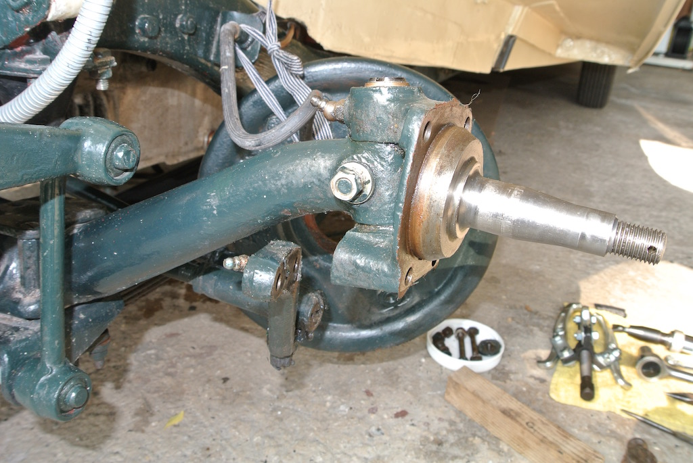I wasn't sure how difficult it would be to remove the stub axles, so before starting I sought guidance from the mg-tabc Yahoo group. It seemed that I should be able to remove them myself, but I would need a press and a reamer to install new bushes and kingpins. A member of the group, who lives not far away, offered to install them if needed. I also obtained advice on who could supply the appropriate parts.
So on Sunday 29th May 2016 I put the front of the car on axle stands, this time supporting it under the chassis in case I needed to remove the whole front axle. Removing the hub and and the brake backplate was straight forward. This included removing the steering linkage. This photo shows the exposed near side stub axle, with the backplate hanging from the chassis.
 I found that the cotter pins were different on each side. The off side had a hexagonal head, whereas the nearside pin had no head. As can be seen from the photo, the pin had pulled completely into the axle. I managed to remove this pin by putting the nut on so that the thread was not quite exposed and then used a G-cramp to push the pin out. Having tightened the G-cramp I then moved the stub axle and the pin 'pinged' loose.
I found that the cotter pins were different on each side. The off side had a hexagonal head, whereas the nearside pin had no head. As can be seen from the photo, the pin had pulled completely into the axle. I managed to remove this pin by putting the nut on so that the thread was not quite exposed and then used a G-cramp to push the pin out. Having tightened the G-cramp I then moved the stub axle and the pin 'pinged' loose.
The cotter pin with the hexagonal head did not succumb to the same treatment. However, a tap with the hammer freed it. Since I want to replace the cotter pins with some with domed heads, it did not matter if they were damaged.
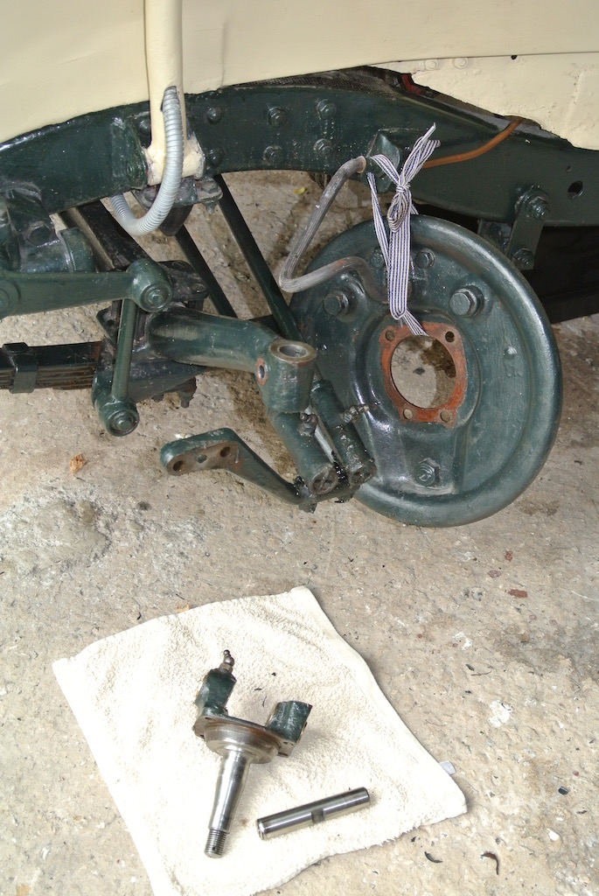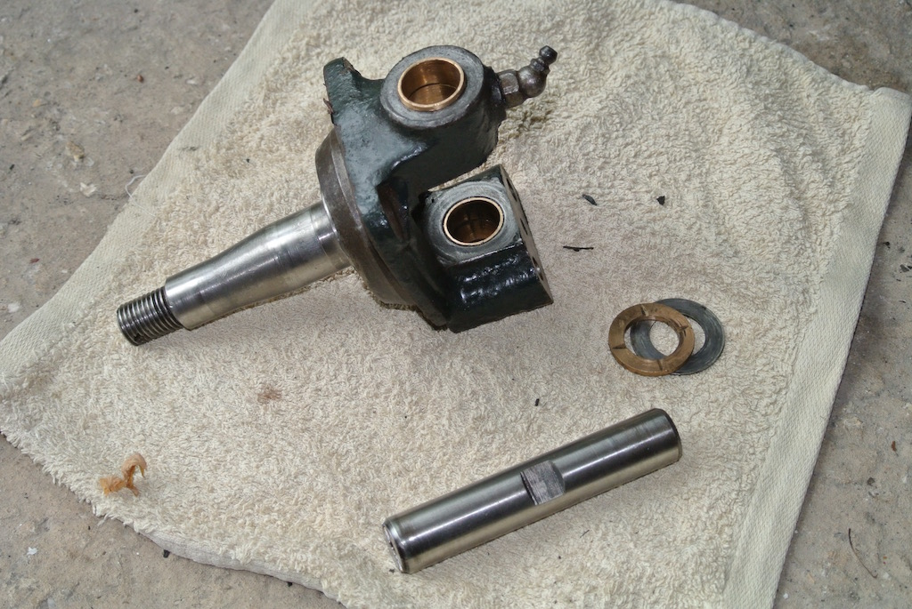Having removed the cap and felt washer on the top of the kingpin, the kingpin tapped out easily using an aluminium drift. The far photo shows the bare axle and the other one shows a close up of the stub axle, kingpin, thrust washer and shim. Prior to removing the stub axles I tried to measure the float between the axle and knuckle. On the near side I could not push a 4 thou feeler gauge in the gap. Thinner gauges did not have the ridgidity to try pushing them in. The thrust washer also looked new. On the off side, however, there was a 15 thou gap, the thrust washer was considerably worn and two shims were installed. Surprisingly, one was on top of the thrust washer!
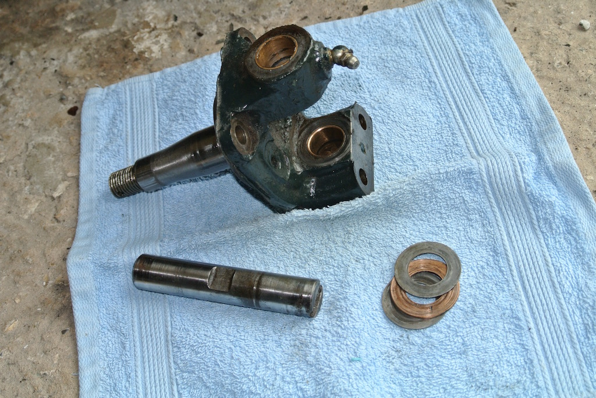However, both kingpins (and their associated bushes) seemed to be in good condition, although the off side one was noticably looser. Clearly the bushes have been replaced at different times. You can see that on the near side stub axle the bush is slightly too long. The lower bush similarly protrudes slightly. So I came to the conclusion that I didn't need to replace the kingpins and bushes.
I bought cotter pins (with a domed head), steering stop bolts and thrust washers from Roger Furneaux.
Members of the mg-tabc group suggested that, while the stub axles were off the car, I should have a crack test done on the spindles, since they are inclined to crack at the root and break off!. So I bought a dye penetrant crack test kit. An alternative would have been to send off the stub axles to have them magnaflux tested. But that would be more time and more cost.
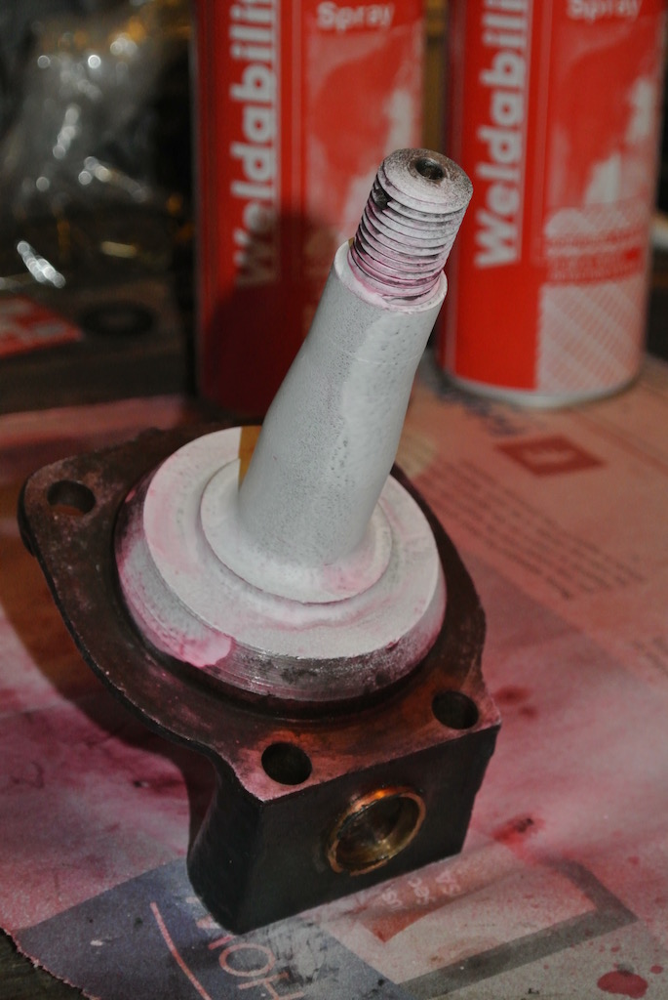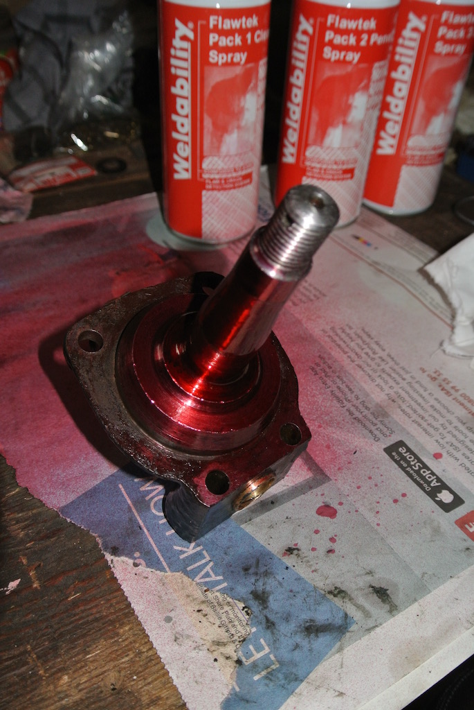The dye penetrant process involves cleaning the sample, covering with dye, leaving it to penetrate any defects, cleaning off the surface dye and then covering the surface with a 'developer' that shows up any cracks.
The kit contains three spray cans. The first can contains cleaner, which, as the name implies, removes contamination from the sample to be tested. The second can contains purple dye, which you spray over the surface and leave for 20 minutes. The idea is that the dye seeps into any cracks. Then you clean the dye off the surface using the cleaner and spray it with the white 'developer'. Again you leave it for a while (about ten minutes) and dye that is in a crack leaches out and stains the coating of developer.
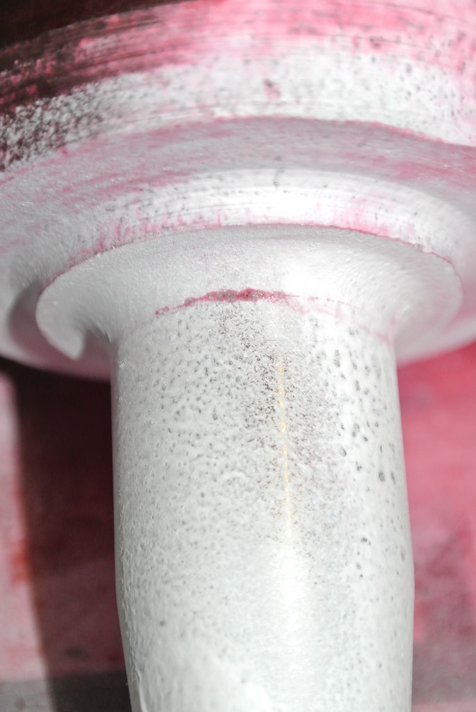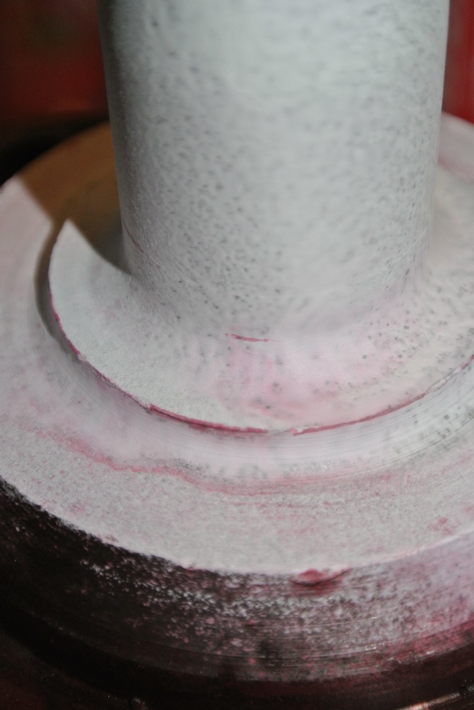The two photos show a potential 5 mm crack at the root of the near side spindle and a 15 mm crack at the root of the off side spindle, both on the underside. This is just what has been reported by other TC owners! Two relatively local mg-tabc members (one in Bognor and the other in Guildford) think that it is not really worthwhile doing a crack test. Since the spindles are 68 years old I should just replace them. The one in Guildford (Eric Worpe) is able to replace the spindles for me and suggested that someone in Canada (Bob Grunau) may have some new ones.
So I contacted Bob, who lives just outside Toronto, and arranged for him to send me two spindles. He is also including two extra spindles for Eric.
Eric also said that he would bore out the cupped (dished) washers, re-cupping the one that has been flattened. However, when I cleaned them I found that the flattened washer is damaged, so I need to get a new one.
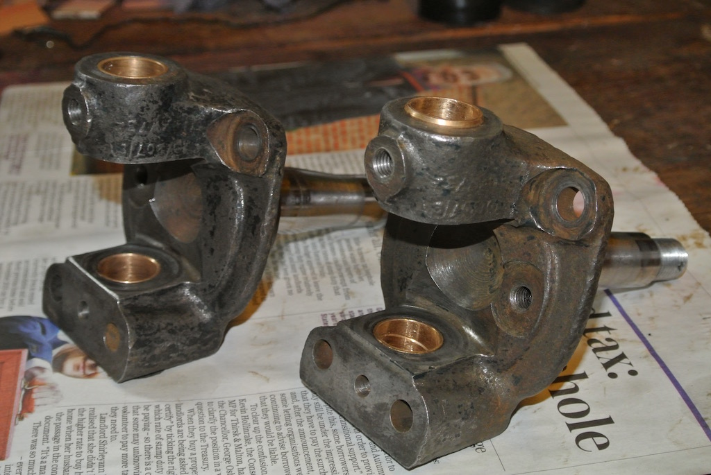My understanding is that to fit a new spindle, having cut off the old spindle and bored out a hole in the knuckle, the knuckle needs to be heated before pressing the new spindle in place. So I decided to remove the green paint that had been used on nearly everything by Chris Hall. The green Hammerite does not adhere to bare cast steel very well and so it was quite easy to scrape it off with a screwdriver blade, finishing off with some wire wool.
Once the new spindles have been fitted I will repaint the knuckles, sticking to the green, even though they would have originally been black.
The new spindles arrived from Bob in Canada. These follow the design in Sherrill, but have a 3/4" UNF thread (as on the TD spindles) instead of the original 5/8" BSF. So I ordered two TD spindle castellated nuts and a new dished washer from the Octagon Club and arranged to meet Eric just outside Horsham to handover the parts.
As you can see from the photo, the bushes on one of the stub axles protrude slightly, so I assumed that they had been replaced at a different time to those in the other stub axle and were actually of the wrong type. Eric also pointed out that the lower bush had been put in upsidedown. The spiral groove should direct grease up to the thrust washer to lubricate it. I also noticed that the bushes in the other stub axle, the ones that I thought were of the right type, have a circular groove rather than a spiral! Eric could replace the bushes with steel-backed variants, but we decided that this could wait till another time.
So on Sunday 19th June I met Eric at Rowhook and gave him the stub axles and new spindles, along with two spindles that he had bought. Then on Saturday 2nd July we went to Eric's in Guildford to collect the stub axles (and had a day out in Guildford).
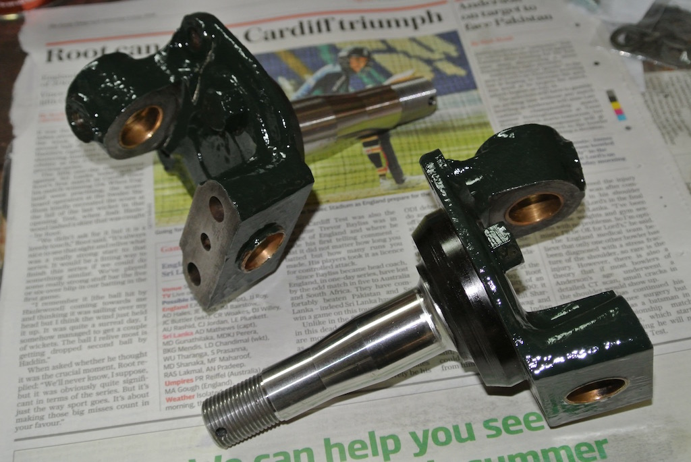 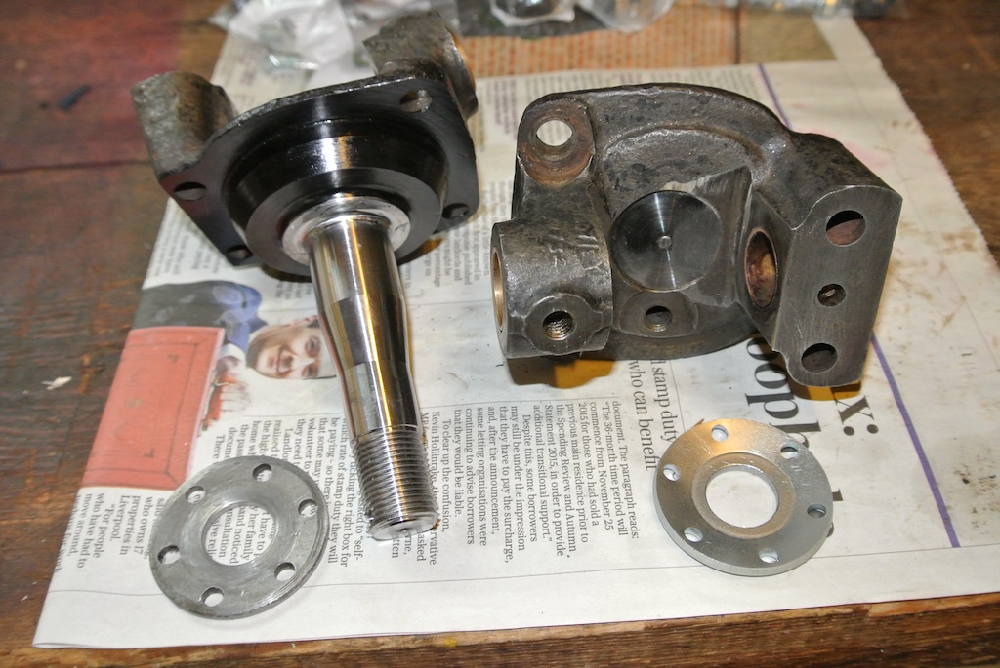The first photo shows the stub axles as returned by Eric, along with the bored-out dished washers. The second photo was taken after I had given the exposed surfaces two coats of green Hammerite. You can see that I fitted the steering stop bolts before painting. I will paint the other bolt heads and nuts after I have given the car a test run.
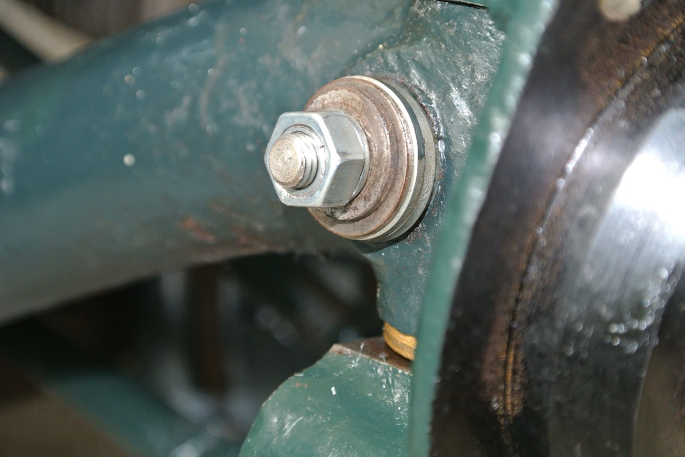 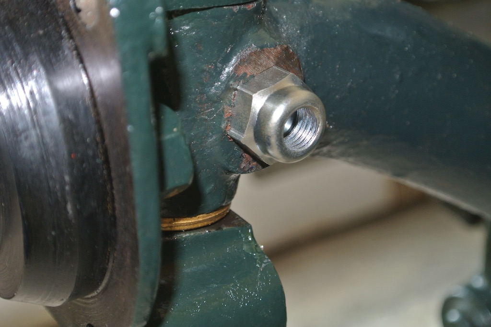 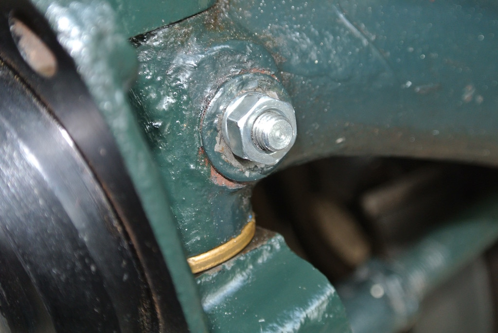 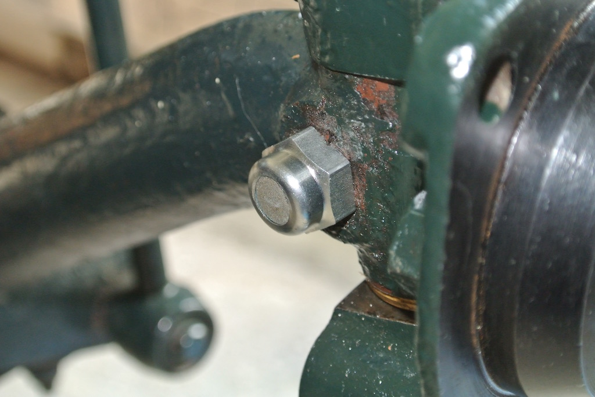So it was Monday 4th July when I put the stub axles back on the car, this time on the correct side. Initially on the off-side I had difficulty getting the cotter pin into the hole, then found that the stub axle was fouling on the axle. Eric had warned about this (the originals were concave behind the spindle) so I tried filing some metal off the axle, but ended up using the angle grinder. However, on the near-side the kingpin would not go through the eye in the axle, even though the original kingpin (now on the off-side) would fit. After filing the inside of the eye I got it to fit. The flat on the off-side cotter pin needed filing down (as expected) so as to fit, but the near-side cotter slid further in, requiring the domed nut to be unscrewed quite some way. I then needed to put washers on the other side. This can be seen in the first pair of photos, whereas the next two photos show the off-side, how the cotter pin should really look. Clearly the flat on the near-side kingpin is deeper than it should be.
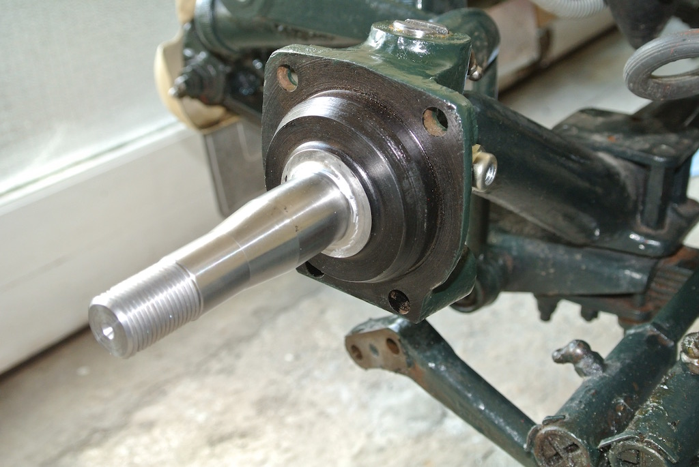
 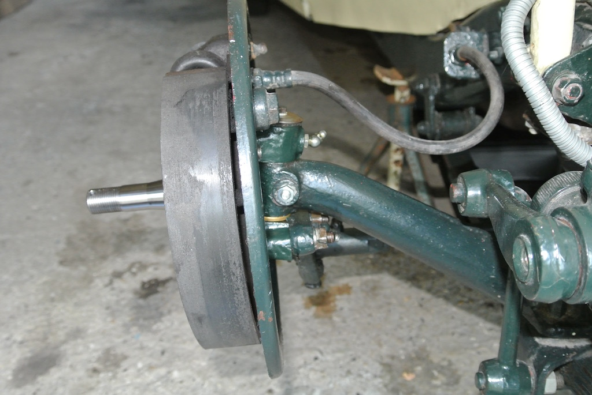
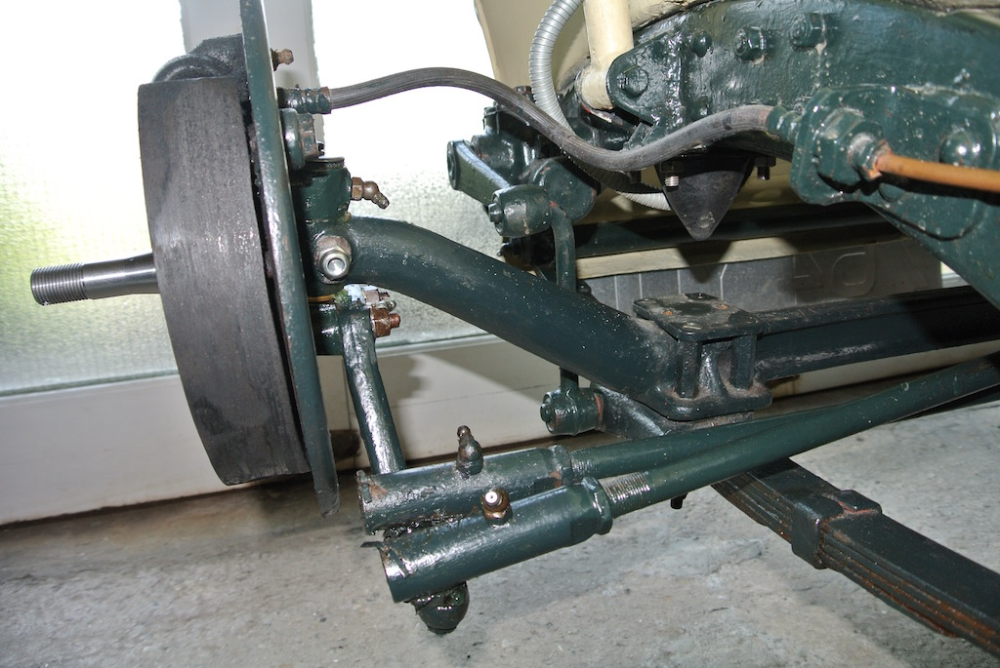After fitting the two stub axles I cleaned up the other bolts needed to reassemble the other parts. Then I refitted the brake backplates and connected the steering links. The first two photos show the stub axles installed (but without the felt washers and caps on the top) and the second two show the brake backplates and steering links fitted.
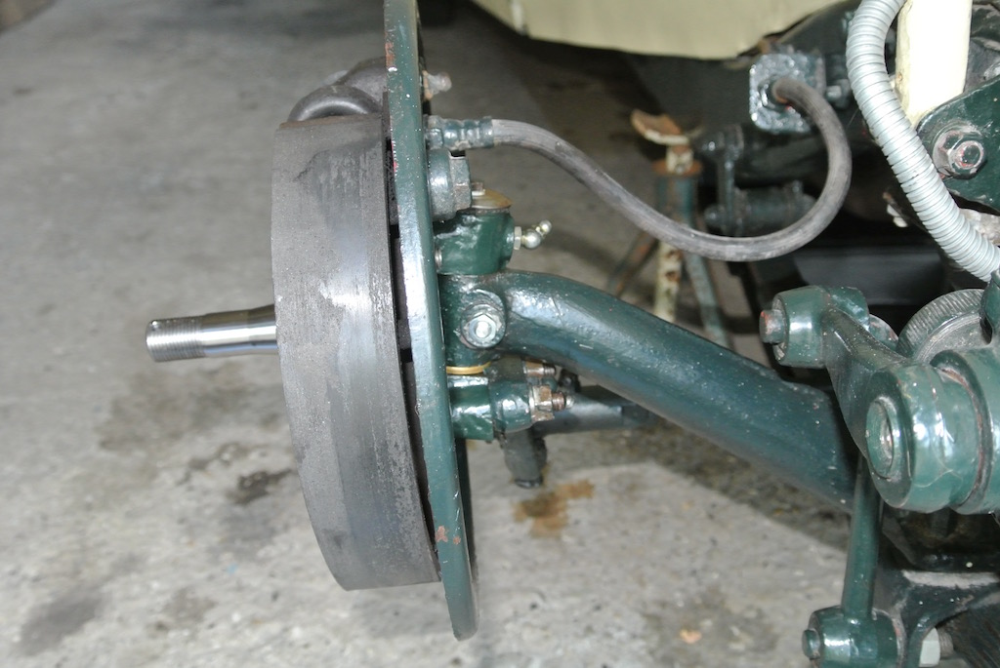
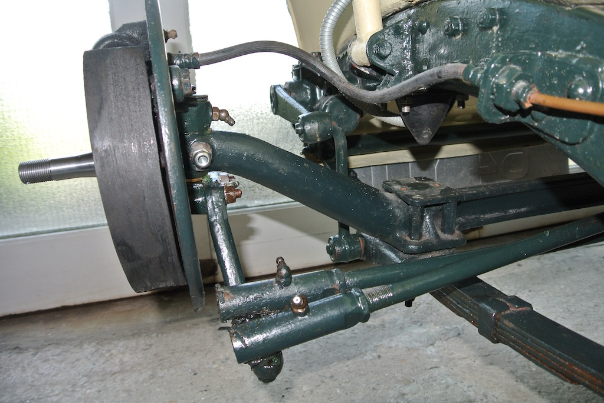After fitting the two stub axles I cleaned up the other bolts needed to reassemble the other parts. Then I refitted the brake backplates and connected the steering links. The first two photos show the stub axles installed (but without the felt washers and caps on the top) and the second two show the brake backplates and steering links fitted.
Then I knocked on the hubs, only to find that I didn't have a socket large enough to fit the securing nuts! I couldn't find anyone locally that had one, so ordered a socket online. In the meantime I borrowed a suitable socket from a neighbour (who has an MGB) and tightened the retaining nuts, but discovered that the near-side hub would not turn! Even when I undid the nut, the hub was stiff to turn.
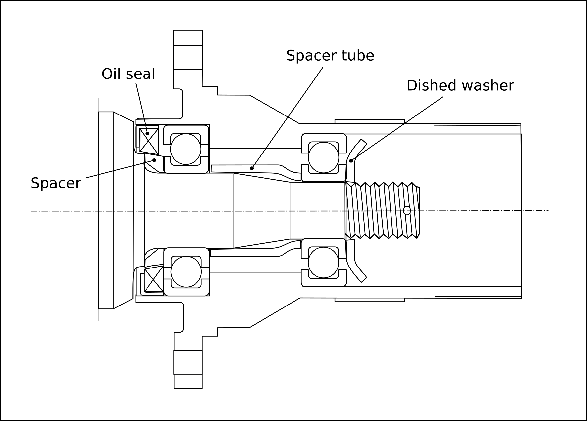 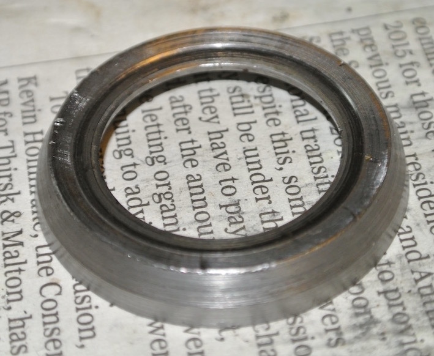Clearly the dimensions of the refurbished stub axle is not quite the same as it was. I measured the gap between the hub and the stub axle, but could not get the feeler gauge down past the seal. So I tried tapping the oil seal in further, but it didn't move. Then I noticed that the oil seal spacer had a rebate in the rear surface, whereas the spacer on the other hub (the one that rotates) did not. Eric suggested that, if the oil seal spacer is worn, then the tube spacer might also be worn. On Tuesday 12th July I removed the outer bearing by moving the tube spacer to one side and tapping the bearing from the rear with a rod. It came out quite easily and so I could remove the tube spacer.
Eric had suggested a more appropriate way of removing the bearing: The spacer can be removed by pushing out the outer bearing. You will need a mandrel that's between 21 and 24 mm in dia. This is used to poke the tube spacer out through the inner bearing, thus also pushing out the outer bearing.
Although he questioned this as a good method.
It did seem that the tube spacer might be shorter than required and so I ordered both an oil seal spacer and a tube spacer from the Octagon Club. Since I could not find details of the internal arrangement of the hub I made some measurements and created this drawing. It is only roughly to scale, but shows the components.
After a weekend away visiting our Son and his family just outside Rotterdam I finally put the hubs back together and on the car on Monday 18th July, seven weeks since I jacked up the car! After a short run I checked the tightness of the cotter pins and steering linkage bolts.
I found that when the new retaining nuts were tightened (to between 110 and 120 ft-lb) they only just reached the split pin holes on the spindles. I had failed to find any washers of a suitable size to go between the nut and the dished washer and so Eric sent me two (about 1/8" thick), which brought the holes nicely under the castellations.
Eric had also advised: Don't forget to torque the nut up to 110/120 ft.lbf, which probably means standing on the socket lever. This is important as the static stress in the spindle must exceed any cyclic stresses and clamping up the spacer, ball bearing inner races and washer for the seal creates a tube effectively of some 30mm dia. which absorbs the cyclic bending stresses produced by the wheel, leaving the inner spindle under a constant load.
© David James 2016 Last updated: 22nd July 2016